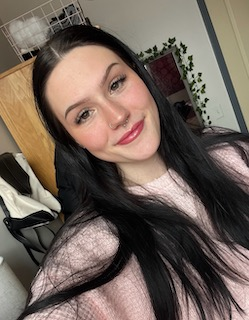

Third year English major studying at the University of Massachusetts Amherst with a focus in professional writing and technical communication. Skilled in creating written pieces from various genres and communicating with readers.
I am a junior at the University of Massachusetts Amherst. My major is English and I am completing a Professional Writing and Technical Communication Certificate. I have always used writing as my platform and I stand by the idea that words are powerful. By combining my personal interests and my studies, I have strengthened my communication skills, written and verbal, and expanded my writing skills to cover many genres, ranging from analytical to creative to technical. I have developed a passion for creating high-quality, engaging pieces that can effectively spread a message to any reader.
My course work has covered a diverse array of subject matter and I have had wonderful opportunities to obtain many skills and reflect on my writing and communication styles. I am committed to creating purposeful writing and am eager to see where my skills can take me in my career. I am excited to contribute to the professional sphere and look forward to any opportunity that will come my way!
Feel free to visit my LinkedIn or reach out to me by email anytime! I hope to hear from you soon.